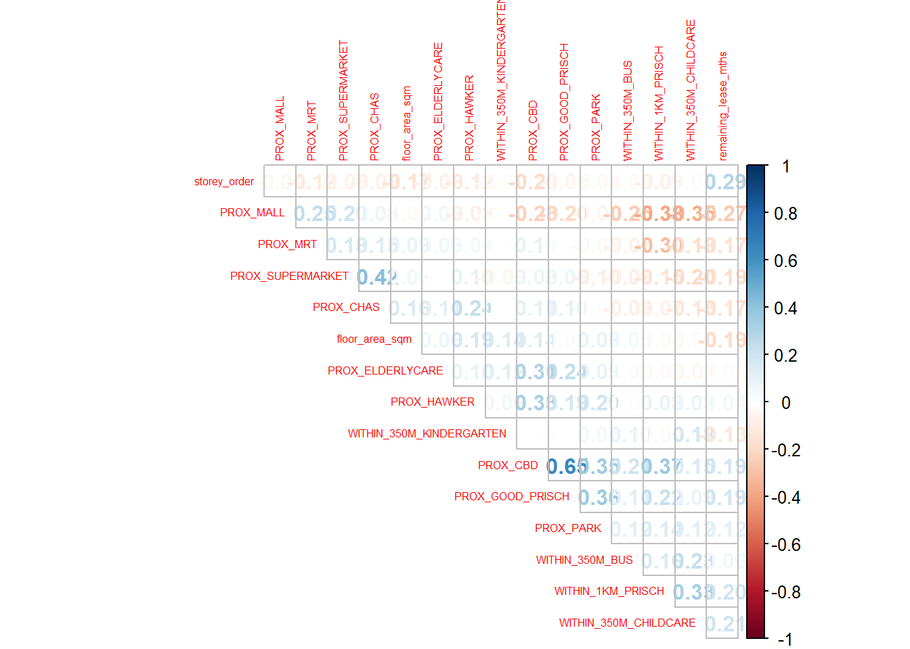

pacman::p_load(sf, spdep, GWmodel, SpatialML,
tmap, rsample, Metrics, tidyverse)Hands-on Exercise 08
Geographically Weighted Predictive Models
Predictive modelling uses statistical learning or machine learning techniques to predict outcomes.
Random forest method.
The data
Read the input data sets. It is in simple feature data frame.
mdata <- read_rds("C:/ngmengye/ISSS626-GAA/Hands-on_exercise/Hands-on_ex08/data/mdata.rds")any(duplicated(mdata))[1] TRUEset.seed(1234)
for(i in 1:nrow(mdata)) {
coords <- st_coordinates(mdata[i,])
jittered_coords <- coords + runif(n=1, min = -0.1, max = 0.1)
mdata[i,]$geometry <- st_sfc(st_point(c(jittered_coords),dim = "XY"),crs = 3414)
}any(duplicated(mdata))[1] FALSESplit into training and test data, 65% for training, 35% for test initial_split() of rsample
set.seed(1234)
resale_split <- initial_split(mdata,
prop = 6.5/10,)
train_data <- training(resale_split)
test_data <- testing(resale_split)write_rds(train_data, "C:/ngmengye/ISSS626-GAA/Hands-on_exercise/Hands-on_ex08/data/train_data.rds")
write_rds(test_data, "C:/ngmengye/ISSS626-GAA/Hands-on_exercise/Hands-on_ex08/data/test_data.rds")Examine sign of multicollinearity
mdata_nogeo <- mdata %>%
st_drop_geometry()
corrplot::corrplot(cor(mdata_nogeo[, 2:17]),
diag = FALSE,
order = "AOE",
tl.pos = "td",
tl.cex = 0.5,
method = "number",
type = "upper")
No sign of multicolinearity, correlation value = 0.8
train_data <- read_rds("C:/ngmengye/ISSS626-GAA/Hands-on_exercise/Hands-on_ex08/data/train_data.rds")
test_data <- read_rds("C:/ngmengye/ISSS626-GAA/Hands-on_exercise/Hands-on_ex08/data/test_data.rds")Build non-spatial multiple linear regression
price_mlr <- lm(resale_price ~ floor_area_sqm +
storey_order + remaining_lease_mths +
PROX_CBD + PROX_ELDERLYCARE + PROX_HAWKER +
PROX_MRT + PROX_PARK + PROX_MALL +
PROX_SUPERMARKET + WITHIN_350M_KINDERGARTEN +
WITHIN_350M_CHILDCARE + WITHIN_350M_BUS +
WITHIN_1KM_PRISCH,
data=train_data)
summary(price_mlr)
Call:
lm(formula = resale_price ~ floor_area_sqm + storey_order + remaining_lease_mths +
PROX_CBD + PROX_ELDERLYCARE + PROX_HAWKER + PROX_MRT + PROX_PARK +
PROX_MALL + PROX_SUPERMARKET + WITHIN_350M_KINDERGARTEN +
WITHIN_350M_CHILDCARE + WITHIN_350M_BUS + WITHIN_1KM_PRISCH,
data = train_data)
Residuals:
Min 1Q Median 3Q Max
-205193 -39120 -1930 36545 472355
Coefficients:
Estimate Std. Error t value Pr(>|t|)
(Intercept) 107601.073 10601.261 10.150 < 2e-16 ***
floor_area_sqm 2780.698 90.579 30.699 < 2e-16 ***
storey_order 14299.298 339.115 42.167 < 2e-16 ***
remaining_lease_mths 344.490 4.592 75.027 < 2e-16 ***
PROX_CBD -16930.196 201.254 -84.124 < 2e-16 ***
PROX_ELDERLYCARE -14441.025 994.867 -14.516 < 2e-16 ***
PROX_HAWKER -19265.648 1273.597 -15.127 < 2e-16 ***
PROX_MRT -32564.272 1744.232 -18.670 < 2e-16 ***
PROX_PARK -5712.625 1483.885 -3.850 0.000119 ***
PROX_MALL -14717.388 2007.818 -7.330 2.47e-13 ***
PROX_SUPERMARKET -26881.938 4189.624 -6.416 1.46e-10 ***
WITHIN_350M_KINDERGARTEN 8520.472 632.812 13.464 < 2e-16 ***
WITHIN_350M_CHILDCARE -4510.650 354.015 -12.741 < 2e-16 ***
WITHIN_350M_BUS 813.493 222.574 3.655 0.000259 ***
WITHIN_1KM_PRISCH -8010.834 491.512 -16.298 < 2e-16 ***
---
Signif. codes: 0 '***' 0.001 '**' 0.01 '*' 0.05 '.' 0.1 ' ' 1
Residual standard error: 61650 on 10320 degrees of freedom
Multiple R-squared: 0.7373, Adjusted R-squared: 0.737
F-statistic: 2069 on 14 and 10320 DF, p-value: < 2.2e-16Residuals = differences between the actual resale prices and the predicted resale prices by the model Median residual is close to 0, which suggests that the model doesnt have systematic bias in its predictions.
Estimate = coefficient = 2780.70 SGD resale price increase for every additional square meter in floor area.
Residual standard error: standard deviation of the residuals, on average, the model’s prediction is off by about SGD61,650
write_rds(price_mlr, "C:/ngmengye/ISSS626-GAA/Hands-on_exercise/Hands-on_ex08/data/price_mlr.rds" ) GWR predictive method
Convert sf to spatialpointdataframe
train_data_sp <- as_Spatial(train_data)
train_data_spclass : SpatialPointsDataFrame
features : 10335
extent : 11597.38, 42623.68, 28217.3, 48741.06 (xmin, xmax, ymin, ymax)
crs : +proj=tmerc +lat_0=1.36666666666667 +lon_0=103.833333333333 +k=1 +x_0=28001.642 +y_0=38744.572 +ellps=WGS84 +towgs84=0,0,0,0,0,0,0 +units=m +no_defs
variables : 17
names : resale_price, floor_area_sqm, storey_order, remaining_lease_mths, PROX_CBD, PROX_ELDERLYCARE, PROX_HAWKER, PROX_MRT, PROX_PARK, PROX_GOOD_PRISCH, PROX_MALL, PROX_CHAS, PROX_SUPERMARKET, WITHIN_350M_KINDERGARTEN, WITHIN_350M_CHILDCARE, ...
min values : 218000, 74, 1, 555, 0.999393538715878, 1.98943787433087e-08, 0.0333358643817954, 0.0220407324774434, 0.0441643212802781, 0.0652540365486641, 0, 6.20621206270077e-09, 1.21715176356525e-07, 0, 0, ...
max values : 1186888, 133, 17, 1164, 19.6500691667807, 3.30163731686804, 2.86763031236184, 2.13060636038504, 2.41313695915468, 10.6223726149914, 2.27100643784442, 0.808332738794272, 1.57131703651196, 7, 20, ... Computing adaptive bandwidth
bw_adaptive <- bw.gwr(resale_price ~ floor_area_sqm +
storey_order + remaining_lease_mths +
PROX_CBD + PROX_ELDERLYCARE + PROX_HAWKER +
PROX_MRT + PROX_PARK + PROX_MALL +
PROX_SUPERMARKET + WITHIN_350M_KINDERGARTEN +
WITHIN_350M_CHILDCARE + WITHIN_350M_BUS +
WITHIN_1KM_PRISCH,
data=train_data_sp,
approach="CV",
kernel="gaussian",
adaptive=TRUE,
longlat=FALSE)Take a cup of tea and have a break, it will take a few minutes.
-----A kind suggestion from GWmodel development group
Adaptive bandwidth: 6395 CV score: 3.60536e+13
Adaptive bandwidth: 3960 CV score: 3.320316e+13
Adaptive bandwidth: 2455 CV score: 2.928339e+13
Adaptive bandwidth: 1524 CV score: 2.550955e+13
Adaptive bandwidth: 950 CV score: 1.956318e+13
Adaptive bandwidth: 593 CV score: 1.583469e+13
Adaptive bandwidth: 375 CV score: 1.310038e+13
Adaptive bandwidth: 237 CV score: 1.113155e+13
Adaptive bandwidth: 155 CV score: 9.572071e+12
Adaptive bandwidth: 101 CV score: 8.456967e+12
Adaptive bandwidth: 71 CV score: 7.605093e+12
Adaptive bandwidth: 49 CV score: 6.965771e+12
Adaptive bandwidth: 38 CV score: 7.599357e+12
Adaptive bandwidth: 58 CV score: 7.275193e+12
Adaptive bandwidth: 45 CV score: 6.872956e+12
Adaptive bandwidth: 41 CV score: 6.793108e+12
Adaptive bandwidth: 40 CV score: 6.780886e+12
Adaptive bandwidth: 38 CV score: 7.599357e+12
Adaptive bandwidth: 40 CV score: 6.780886e+12 40 neighbour points = optimal
write_rds(bw_adaptive, "C:/ngmengye/ISSS626-GAA/Hands-on_exercise/Hands-on_ex08/data/bw_adaptive.rds")Construct the adaptive bandwidth gwr model
bw_adaptive <- read_rds("C:/ngmengye/ISSS626-GAA/Hands-on_exercise/Hands-on_ex08/data/bw_adaptive.rds")gwr_adaptive <- gwr.basic(formula = resale_price ~
floor_area_sqm + storey_order +
remaining_lease_mths + PROX_CBD +
PROX_ELDERLYCARE + PROX_HAWKER +
PROX_MRT + PROX_PARK + PROX_MALL +
PROX_SUPERMARKET + WITHIN_350M_KINDERGARTEN +
WITHIN_350M_CHILDCARE + WITHIN_350M_BUS +
WITHIN_1KM_PRISCH,
data=train_data_sp,
bw=bw_adaptive,
kernel = 'gaussian',
adaptive=TRUE,
longlat = FALSE)write_rds(gwr_adaptive, "C:/ngmengye/ISSS626-GAA/Hands-on_exercise/Hands-on_ex08/data/gwr_adaptive.rds")Retrieve gwr output object
gwr_adaptive <- read_rds("C:/ngmengye/ISSS626-GAA/Hands-on_exercise/Hands-on_ex08/data/gwr_adaptive.rds")gwr_adaptive ***********************************************************************
* Package GWmodel *
***********************************************************************
Program starts at: 2024-10-20 20:36:40.473558
Call:
gwr.basic(formula = resale_price ~ floor_area_sqm + storey_order +
remaining_lease_mths + PROX_CBD + PROX_ELDERLYCARE + PROX_HAWKER +
PROX_MRT + PROX_PARK + PROX_MALL + PROX_SUPERMARKET + WITHIN_350M_KINDERGARTEN +
WITHIN_350M_CHILDCARE + WITHIN_350M_BUS + WITHIN_1KM_PRISCH,
data = train_data_sp, bw = bw_adaptive, kernel = "gaussian",
adaptive = TRUE, longlat = FALSE)
Dependent (y) variable: resale_price
Independent variables: floor_area_sqm storey_order remaining_lease_mths PROX_CBD PROX_ELDERLYCARE PROX_HAWKER PROX_MRT PROX_PARK PROX_MALL PROX_SUPERMARKET WITHIN_350M_KINDERGARTEN WITHIN_350M_CHILDCARE WITHIN_350M_BUS WITHIN_1KM_PRISCH
Number of data points: 10335
***********************************************************************
* Results of Global Regression *
***********************************************************************
Call:
lm(formula = formula, data = data)
Residuals:
Min 1Q Median 3Q Max
-205193 -39120 -1930 36545 472355
Coefficients:
Estimate Std. Error t value Pr(>|t|)
(Intercept) 107601.073 10601.261 10.150 < 2e-16 ***
floor_area_sqm 2780.698 90.579 30.699 < 2e-16 ***
storey_order 14299.298 339.115 42.167 < 2e-16 ***
remaining_lease_mths 344.490 4.592 75.027 < 2e-16 ***
PROX_CBD -16930.196 201.254 -84.124 < 2e-16 ***
PROX_ELDERLYCARE -14441.025 994.867 -14.516 < 2e-16 ***
PROX_HAWKER -19265.648 1273.597 -15.127 < 2e-16 ***
PROX_MRT -32564.272 1744.232 -18.670 < 2e-16 ***
PROX_PARK -5712.625 1483.885 -3.850 0.000119 ***
PROX_MALL -14717.388 2007.818 -7.330 2.47e-13 ***
PROX_SUPERMARKET -26881.938 4189.624 -6.416 1.46e-10 ***
WITHIN_350M_KINDERGARTEN 8520.472 632.812 13.464 < 2e-16 ***
WITHIN_350M_CHILDCARE -4510.650 354.015 -12.741 < 2e-16 ***
WITHIN_350M_BUS 813.493 222.574 3.655 0.000259 ***
WITHIN_1KM_PRISCH -8010.834 491.512 -16.298 < 2e-16 ***
---Significance stars
Signif. codes: 0 '***' 0.001 '**' 0.01 '*' 0.05 '.' 0.1 ' ' 1
Residual standard error: 61650 on 10320 degrees of freedom
Multiple R-squared: 0.7373
Adjusted R-squared: 0.737
F-statistic: 2069 on 14 and 10320 DF, p-value: < 2.2e-16
***Extra Diagnostic information
Residual sum of squares: 3.922202e+13
Sigma(hat): 61610.08
AIC: 257320.2
AICc: 257320.3
BIC: 247249
***********************************************************************
* Results of Geographically Weighted Regression *
***********************************************************************
*********************Model calibration information*********************
Kernel function: gaussian
Adaptive bandwidth: 40 (number of nearest neighbours)
Regression points: the same locations as observations are used.
Distance metric: Euclidean distance metric is used.
****************Summary of GWR coefficient estimates:******************
Min. 1st Qu. Median 3rd Qu.
Intercept -3.6491e+08 -4.7734e+05 -8.2999e+03 5.5034e+05
floor_area_sqm -2.8629e+04 1.4475e+03 2.2999e+03 3.3897e+03
storey_order 3.3187e+03 8.5905e+03 1.0826e+04 1.3396e+04
remaining_lease_mths -1.4438e+03 2.6062e+02 3.9049e+02 5.2861e+02
PROX_CBD -1.0842e+07 -5.7712e+04 -1.3792e+04 2.6532e+04
PROX_ELDERLYCARE -3.5472e+07 -4.0637e+04 1.0567e+04 6.1073e+04
PROX_HAWKER -2.3968e+08 -5.1360e+04 2.9612e+03 6.4265e+04
PROX_MRT -1.2593e+07 -1.0489e+05 -4.9352e+04 5.0924e+03
PROX_PARK -6.5948e+06 -4.8678e+04 -8.7189e+02 5.3407e+04
PROX_MALL -1.8125e+07 -7.4216e+04 -1.3974e+04 4.9828e+04
PROX_SUPERMARKET -4.5733e+06 -6.3446e+04 -1.7445e+04 3.5572e+04
WITHIN_350M_KINDERGARTEN -4.3835e+05 -6.0020e+03 9.1166e+01 4.7236e+03
WITHIN_350M_CHILDCARE -1.0274e+05 -2.2353e+03 2.6660e+02 2.6409e+03
WITHIN_350M_BUS -1.1794e+05 -1.4726e+03 1.1618e+02 1.7595e+03
WITHIN_1KM_PRISCH -6.6487e+05 -5.5955e+03 2.6942e+02 5.7472e+03
Max.
Intercept 1.6501e+08
floor_area_sqm 5.1150e+04
storey_order 2.9540e+04
remaining_lease_mths 1.8122e+03
PROX_CBD 2.5090e+07
PROX_ELDERLYCARE 8.2802e+07
PROX_HAWKER 5.9665e+06
PROX_MRT 2.0174e+08
PROX_PARK 1.6454e+07
PROX_MALL 1.0485e+07
PROX_SUPERMARKET 3.8794e+06
WITHIN_350M_KINDERGARTEN 6.7207e+05
WITHIN_350M_CHILDCARE 1.0791e+05
WITHIN_350M_BUS 3.7317e+04
WITHIN_1KM_PRISCH 5.1300e+05
************************Diagnostic information*************************
Number of data points: 10335
Effective number of parameters (2trace(S) - trace(S'S)): 1730.083
Effective degrees of freedom (n-2trace(S) + trace(S'S)): 8604.917
AICc (GWR book, Fotheringham, et al. 2002, p. 61, eq 2.33): 238871.9
AIC (GWR book, Fotheringham, et al. 2002,GWR p. 96, eq. 4.22): 237036.9
BIC (GWR book, Fotheringham, et al. 2002,GWR p. 61, eq. 2.34): 238209
Residual sum of squares: 4.829219e+12
R-square value: 0.9676568
Adjusted R-square value: 0.9611532
***********************************************************************
Program stops at: 2024-10-20 20:37:40.981568 Convert the test data from sf data.frame to SpatialPointDataFrame
test_data_sp <- as_Spatial(test_data)
test_data_spclass : SpatialPointsDataFrame
features : 5566
extent : 11597.25, 42623.72, 28287.71, 48669.68 (xmin, xmax, ymin, ymax)
crs : +proj=tmerc +lat_0=1.36666666666667 +lon_0=103.833333333333 +k=1 +x_0=28001.642 +y_0=38744.572 +ellps=WGS84 +towgs84=0,0,0,0,0,0,0 +units=m +no_defs
variables : 17
names : resale_price, floor_area_sqm, storey_order, remaining_lease_mths, PROX_CBD, PROX_ELDERLYCARE, PROX_HAWKER, PROX_MRT, PROX_PARK, PROX_GOOD_PRISCH, PROX_MALL, PROX_CHAS, PROX_SUPERMARKET, WITHIN_350M_KINDERGARTEN, WITHIN_350M_CHILDCARE, ...
min values : 230888, 74, 1, 546, 1.00583660772922, 3.34897933104965e-07, 0.0474019664161957, 0.0414043955932523, 0.0502664084494264, 0.0907500295577619, 0, 4.55547870890763e-09, 1.21715176356525e-07, 0, 0, ...
max values : 1050000, 138, 14, 1151, 19.632402730488, 3.30163731686804, 2.83106651960209, 2.13060636038504, 2.41313695915468, 10.6169590126272, 2.26056404492346, 0.79249074802552, 1.53786629004208, 7, 16, ... Computing adaptive bandwidth for the test data
gwr_bw_test_adaptive <- bw.gwr(resale_price ~ floor_area_sqm +
storey_order + remaining_lease_mths +
PROX_CBD + PROX_ELDERLYCARE + PROX_HAWKER +
PROX_MRT + PROX_PARK + PROX_MALL +
PROX_SUPERMARKET + WITHIN_350M_KINDERGARTEN +
WITHIN_350M_CHILDCARE + WITHIN_350M_BUS +
WITHIN_1KM_PRISCH,
data=test_data_sp,
approach="CV",
kernel="gaussian",
adaptive=TRUE,
longlat=FALSE)Take a cup of tea and have a break, it will take a few minutes.
-----A kind suggestion from GWmodel development group
Adaptive bandwidth: 3447 CV score: 1.902156e+13
Adaptive bandwidth: 2138 CV score: 1.752645e+13
Adaptive bandwidth: 1328 CV score: 1.556298e+13
Adaptive bandwidth: 828 CV score: 1.357496e+13
Adaptive bandwidth: 518 CV score: 1.03075e+13
Adaptive bandwidth: 327 CV score: 8.348382e+12
Adaptive bandwidth: 208 CV score: 6.860524e+12
Adaptive bandwidth: 135 CV score: 5.969492e+12
Adaptive bandwidth: 89 CV score: 5.242263e+12
Adaptive bandwidth: 62 CV score: 4.742763e+12
Adaptive bandwidth: 43 CV score: 4.357877e+12
Adaptive bandwidth: 34 CV score: 4.125835e+12
Adaptive bandwidth: 25 CV score: 4.148839e+12
Adaptive bandwidth: 36 CV score: 4.165627e+12
Adaptive bandwidth: 29 CV score: 4.061362e+12
Adaptive bandwidth: 29 CV score: 4.061362e+12 Computing predicted values of the test data
# gwr_pred <- gwr.predict(formula = resale_price ~
# floor_area_sqm + storey_order +
# remaining_lease_mths + PROX_CBD +
# PROX_ELDERLYCARE + PROX_HAWKER +
# PROX_MRT + PROX_PARK + PROX_MALL +
# PROX_SUPERMARKET + WITHIN_350M_KINDERGARTEN +
# WITHIN_350M_CHILDCARE + WITHIN_350M_BUS +
# WITHIN_1KM_PRISCH,
# data=train_data_sp,
# predictdata = test_data_sp,
# p=2,
# theta=0,
# bw=40,
# kernel = 'gaussian',
# adaptive=TRUE,
# longlat = FALSE)Preparing coordinates data
Extract the x,y coordinates of the full, training and test data sets.
coords <- st_coordinates(mdata)
coords_train <- st_coordinates(train_data)
coords_test <- st_coordinates(test_data)Write all the output into rds for future used
coords_train <- write_rds(coords_train, "C:/ngmengye/ISSS626-GAA/Hands-on_exercise/Hands-on_ex08/data/coords_train.rds" )
coords_test <- write_rds(coords_test, "C:/ngmengye/ISSS626-GAA/Hands-on_exercise/Hands-on_ex08/data/coords_test.rds" )train_data <- train_data %>%
st_drop_geometry()Calibrating random forest model using ranger package
set.seed(1234)
rf <- ranger(resale_price ~ floor_area_sqm + storey_order +
remaining_lease_mths + PROX_CBD + PROX_ELDERLYCARE +
PROX_HAWKER + PROX_MRT + PROX_PARK + PROX_MALL +
PROX_SUPERMARKET + WITHIN_350M_KINDERGARTEN +
WITHIN_350M_CHILDCARE + WITHIN_350M_BUS +
WITHIN_1KM_PRISCH,
data=train_data)
rfRanger result
Call:
ranger(resale_price ~ floor_area_sqm + storey_order + remaining_lease_mths + PROX_CBD + PROX_ELDERLYCARE + PROX_HAWKER + PROX_MRT + PROX_PARK + PROX_MALL + PROX_SUPERMARKET + WITHIN_350M_KINDERGARTEN + WITHIN_350M_CHILDCARE + WITHIN_350M_BUS + WITHIN_1KM_PRISCH, data = train_data)
Type: Regression
Number of trees: 500
Sample size: 10335
Number of independent variables: 14
Mtry: 3
Target node size: 5
Variable importance mode: none
Splitrule: variance
OOB prediction error (MSE): 728602496
R squared (OOB): 0.9495728 write_rds(rf, "C:/ngmengye/ISSS626-GAA/Hands-on_exercise/Hands-on_ex08/data/rf.rds")rf <- read_rds("C:/ngmengye/ISSS626-GAA/Hands-on_exercise/Hands-on_ex08/data/rf.rds")
rfRanger result
Call:
ranger(resale_price ~ floor_area_sqm + storey_order + remaining_lease_mths + PROX_CBD + PROX_ELDERLYCARE + PROX_HAWKER + PROX_MRT + PROX_PARK + PROX_MALL + PROX_SUPERMARKET + WITHIN_350M_KINDERGARTEN + WITHIN_350M_CHILDCARE + WITHIN_350M_BUS + WITHIN_1KM_PRISCH, data = train_data)
Type: Regression
Number of trees: 500
Sample size: 10335
Number of independent variables: 14
Mtry: 3
Target node size: 5
Variable importance mode: none
Splitrule: variance
OOB prediction error (MSE): 728602496
R squared (OOB): 0.9495728 Mtry = The number of predictor variables randomly chosen for consideration at each split in a tree. Mtry of 3 means that 3 variables are randomly selected at each split to determine the best split.
Target node size: 5, min number of observations allowed in a terminal node of a tree. Here it indicates that each final node in the tree will have at least 5 observations.
variance importance mode: no additional variable importance metrics are reported in this output.
Splitrule: variance = reduce the overall variancce in the target variable
Out-of-bad(OOB)Prediction Error (MSE): Means Squared Error = 728602496 based on the Out-of-Bag samples.
R-squared (OOB) = explain 95% of the variance in the resale prices, which indicates a very strong fit.
Calibrating Geographical Random Forest Model using grf() of SpatialML package
# set.seed(1234)
# gwRF_adaptive <- grf(formula = resale_price ~ floor_area_sqm + storey_order +
# remaining_lease_mths + PROX_CBD + PROX_ELDERLYCARE +
# PROX_HAWKER + PROX_MRT + PROX_PARK + PROX_MALL +
# PROX_SUPERMARKET + WITHIN_350M_KINDERGARTEN +
# WITHIN_350M_CHILDCARE + WITHIN_350M_BUS +
# WITHIN_1KM_PRISCH,
# dframe=train_data,
# bw=55,
# kernel="adaptive",
# coords=coords_train)Save the model output
# write_rds(gwRF_adaptive, "C:/ngmengye/ISSS626-GAA/Hands-on_exercise/Hands-on_ex08/data/gwRF_adaptive.rds")Retrieve the save model
# gwRF_adaptive <- read_rds("C:/ngmengye/ISSS626-GAA/Hands-on_exercise/Hands-on_ex08/data/gwRF_adaptive.rds")Predicting the test data
test_data <- cbind(test_data, coords_test) %>%
st_drop_geometry()# gwRF_pred <- predict.grf(gwRF_adaptive,
# test_data,
# x.var.name="X",
# y.var.name="Y",
# local.w=1,
# global.w=0)Save the output into rds file
# GRF_pred <- write_rds(gwRF_pred, "C:/ngmengye/ISSS626-GAA/Hands-on_exercise/Hands-on_ex08/data/GRF_pred.rds")